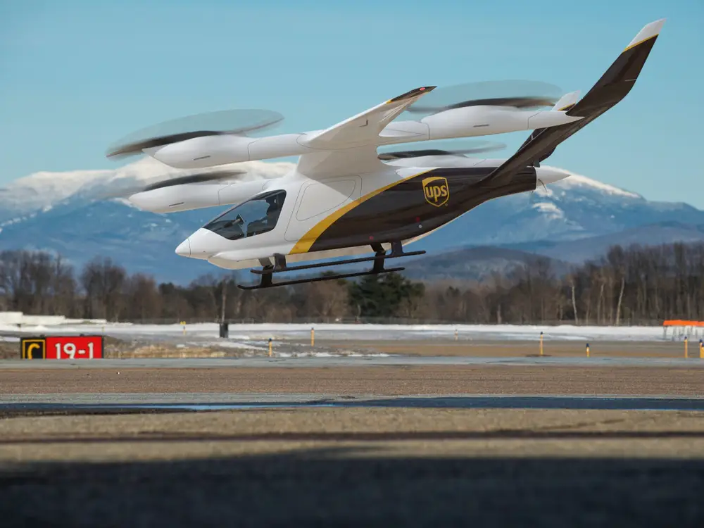

The Growing Urban Air Mobility Market
Urbanization, traffic density, and increasing carbon emissions from standard vehicles are all factors that cities across the world must consider when seeking more efficient and sustainable modes of transportation. This is where UAM comes into play. UAM (Urban Air Mobility) is a term used in the aviation industry to categorize automated aerial transportation systems for cargo or passengers. Although futuristic in concept, UAM has the potential to become an integral part of the global metropolitan landscape over the next ten years. Developments in aviation technology such as electric propulsion, battery systems, and autonomous flight have already rapidly advanced the UAM Market. Notably, global forecasts project the urban air mobility market to grow from USD 2.6 billion in 2020 to USD 9.1 billion by 2030. The future of aerial transportation ultimately lies in the driver of the UAM market’s growth – the eVTOL sector – which is currently disrupting the way we think about transportation.
What exactly are eVTOLs and how can they be utilized?
eVTOLs are “electric vertical takeoff and landing” aircrafts comparable to small electric helicopters. Benefits of these aircrafts include the ability to take off and land in small spaces, and that eVTOLs are carbon neutral, faster than cars, and quieter than standard helicopters. While there is no one standard design for these vehicles, an aircraft developed by Joby Aviation has a maximum range of more than 150 miles and a cruising speed of 200 miles per hour, capable of taking passengers from LAX to Newport Beach in only 15 minutes. With commuting times and traffic congestion ever increasing, the usage of eVTOLs in commercial passenger travel seems promising, but achieving certification for passenger use may entail a complicated and lengthy process. In the near term, eVTOLs seem much better suited for small package delivery by companies like Amazon and FedEx, rather than commercial flight. Due to the sheer scale of e-commerce, the global market for small packages is expected to more than double over the next five years – from 103 billion parcels in 2019 to 250 billion by 2026 — eVTOLs could play an essential role in the expansion of future delivery services. Unlike the logistics market, the potential of eVTOLs for passenger use quickly becomes extremely complex — regulatory certification and infrastructure development challenges will be a high hurdle to full adoption and market success.
Assessing eVTOL Investment Risks
The main risk in eVTOL investment is that the industry operators and equipment manufacturers face complicated governmental regulations, which evolve as technology advances. The Federal Aviation Administration places aircraft companies at an extremely high standard to ensure safety of new technology within the industry. Certifying new aircraft is a very intricate process that can take as long as 4-5 years to achieve. Because of the complexities in eVTOL design, such as battery technology that is unknown to regulators, the certification process can become even lengthier. Infrastructure issues will also arise when taking eVTOLs to market, specifically in the securing of suitable locations for sky ports and charging stations in compact urban areas. Space for eVTOLs is limited, for example, buildings in dense cities such as New York have obstacles like rooftop heating or water units that could block established landing points. Other risks include raw material availability, competition in air traffic, pilot training and the overall risk of proper execution in bringing the new products to market.
The eVTOL Race to Market: Not if, but when?
When considering the virtues of efficiency and sustainability there is no doubt that eVTOLs will be the future of urban air mobility. Leading companies in the development process for eVTOLs are seeking to launch their services over the next four to five years. This may seem aggressive, considering the complications in regulation and infrastructure, yet the most visible and well-funded eVTOL companies expect to achieve certification and reach the market within this timeframe. Joby Aviation is projecting to begin commercial passenger travel as early as 2024. Joby has already raised $2B+ from a public offering, and estimates that they will need an additional $900M for a successful launch. Other companies on the rise include Archer Aviation, which is in the process of developing an aerial passenger taxi, and Beta Technologies, which is developing aircraft for deliveries of small cargo and medical products. These companies are providing guidance that the 2024-26 timeframe is likely for market entry. While these industry pioneers have ambitious goals, potential investors will need to evaluate the complications that come with launching these aircrafts and what role they will ultimately play in the UAM industry and overall transportation ecosystem. The next decade will provide proof that the rewards outweigh the risks, and it will be exciting to see eVTOLs take flight across the global market.
Sources: The Wall Street Journal, John Sidreau, July 2, 2021; Ahead of The Curve Series, Cowen Equity Research, June 17, 2021; DroneLife, Miriam McNabb, February 25, 2021